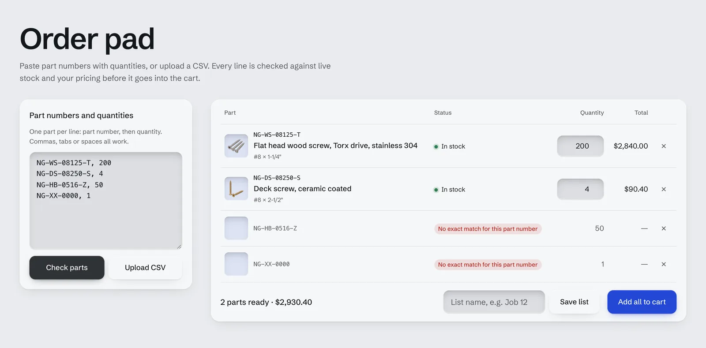

Selling
B2B and bulk ordering
Toolcrib reads Shopify's own B2B features, so trade buyers get their prices and rules without an app. Retail buyers see regular prices.
#Volume pricing and quantity rules
Set price breaks and quantity rules on a B2B catalog in CustomersCompanies or ProductsCatalogs. Toolcrib shows them:
- as a table on the product page (Volume pricing block) with a live total and savings,
- as a "5+ at $12.90" line on product cards and in the quick order table,
- as "Add 3 more for $11.90 each" on cart lines.
Minimum, maximum and increment rules set every quantity stepper, so buyers cannot add a quantity the catalog does not allow.
#Order pad
The order pad is for buyers who know their part numbers.


- Create a page with the handle
order-padand the template page.order-pad in Online StorePages. - Buyers paste lines like
NG-WS-08125-T, 200, upload a CSV, or scan barcodes on their phone. - Check looks every line up against live stock and pricing; quantities are adjusted to the quantity rules and flagged.
- Add all to cart adds every found line at once.
Lists can be saved by name for reorders. Share copies a link that fills the pad on another device or for a colleague, and Email sends the lines with that link.
#Quick order table
Use the product template quick-order on products with many variants. Every variant becomes a row with SKU, options, stock, price, volume prices and a quantity field. Same quantity for every row, Clear quantities and Export CSV sit above the table.
#Requesting quotes
- Quote request block on the product page: quantity, email, company and a note, sent with the product and SKU.
- Request a quote in the cart: the whole cart as a table with your contact form. The cart stays as it is.
Both arrive in your store email through Shopify's contact form.
#Reorder
The Reorder section shows a signed-in customer's recent orders with Add all to cart. Lines that are no longer for sale are skipped and the buyer is told. It is on the order pad template and can be added to any page.
#Prices for trade customers only
In Theme settings > Trade, turn on Show prices to signed-in customers only. Shoppers who are not signed in see "Log in to see prices" in place of prices, volume tables and add to cart buttons, and the price filter is hidden. Fill in Customer tag (for example trade) to show prices only to signed-in customers with that tag.
The theme leaves prices out of its own pages, but Shopify's analytics data on each page still includes them. If prices must stay private, use Shopify B2B company catalogs, which set prices per company.
#Prices with or without VAT
Theme settingsProduct cardsLet shoppers switch prices between incl. and excl. VAT adds a switch to the header. Set the VAT rate. Prices, live totals and volume tables follow the switch; checkout always charges the tax set in your store.